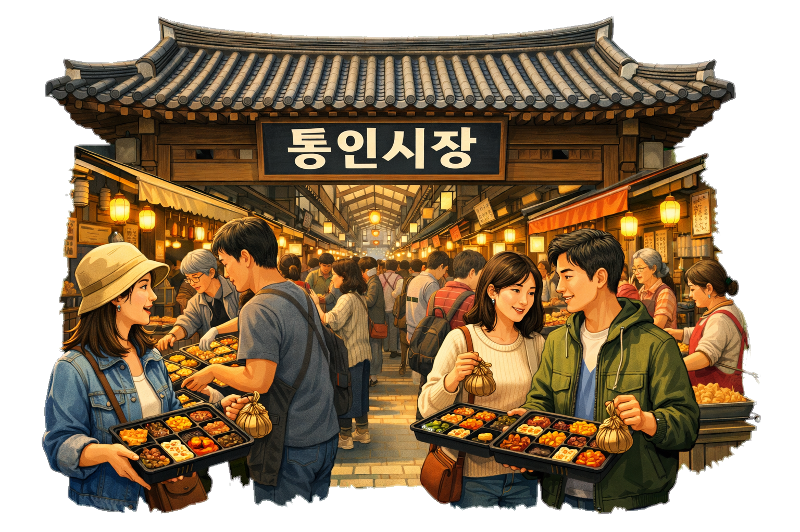

상인 인터뷰 · 종로구 · 읽는 시간 4분
"빈대떡 한 장에 담긴 30년의 세월"
광장시장에서 30년째 맷돌을 돌리고 있는 박순자 할머니. 기름 냄새 가득한 골목에서 할머니가 지켜온 것은 단순한 음식이 아니라 손님들과의 약속이었습니다.
계속 읽어보기 →수천 개의 점포, 수만 명의 사람들. 골목마다 살아 숨 쉬는 진솔한 삶의 기록
광장시장에서 30년째 맷돌을 돌리고 있는 박순자 할머니. 기름 냄새 가득한 골목에서 할머니가 지켜온 것은 단순한 음식이 아니라 손님들과의 약속이었습니다.
계속 읽어보기 →
어르신들의 쉼터였던 동묘 벼룩시장이 어떻게 젊은이들의 빈티지 패션 성지가 되었을까요? 좁은 골목에서 발견한 세대 공존의 풍경을 기록했습니다.
계속 읽어보기 →
통인시장의 엽전 도시락은 단순한 관광 이벤트가 아닙니다. 전통 시장의 온기와 지역 상권 상생이 만들어낸 서촌 골목만의 따뜻한 문화를 담았습니다.
계속 읽어보기 →
모두가 잠든 새벽 2시, 노량진 수산시장은 비로소 깨어납니다. 치열한 활어 경매 소리와 함께 서울의 하루를 여는 사람들의 뜨거운 열기를 전합니다.
계속 읽어보기 →탐방기를 읽은 뒤 교통편, 대표 먹거리 가격, 추천 동선이 담긴 상세 가이드를 확인하세요.